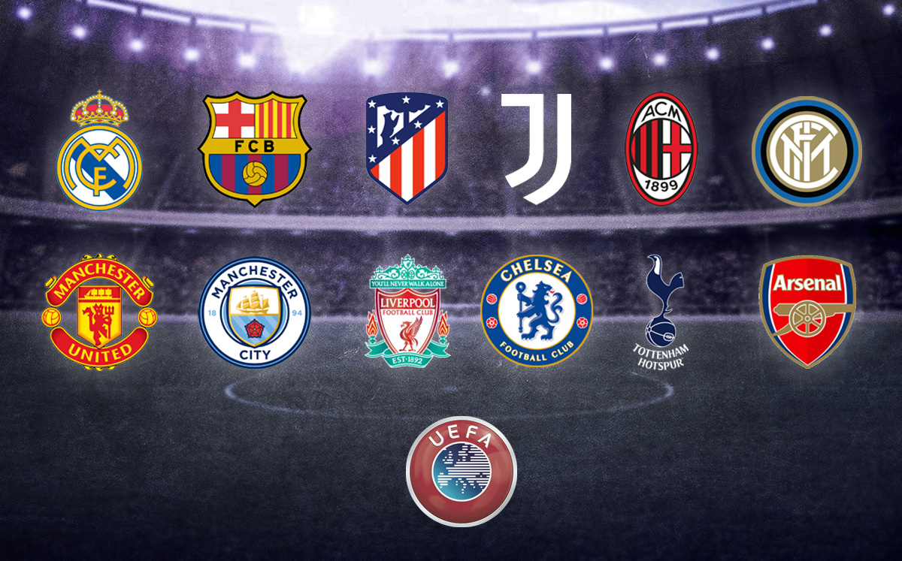
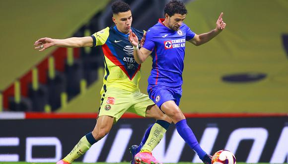

ES OFICIAL: LA UEFA CONFIRMA LA SUPER LIGA EUROPEA
La Superliga europea ya es una realidad. La iniciativa, que llevaba años trabajándose en la sombra impulsada por Andrea Agnelli o Florentino Pérez, se ha disparado en las últimas semanas y se concretó este domingo 18 de abril de manera definitiva, tras hacerse oficial en la madrugada de este lunes el lanzamiento de un comunicado.
AMÉRICA Y CRUZ AZUL EMPATAN A UNO
El Clásico Joven más adulto de todos los tiempos defraudó de forma colosal. La Máquina fue detenida por el villano de siempre, pero las Águilas tampoco volaron alto en el estadio Azteca.
